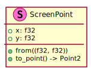
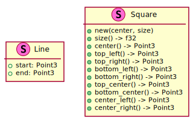

6.5. Coordinate Systems¶
A critical part of any video game is to show the games graphics on the user’s screen. However, most games does not directly control the contents of individual pixels. Instead geometry is submitted to the graphics pipeline to be rendered. The pipeline then determines the final color to write to each screen pixel. The geometry is described in terms of world coordinates. A projection matrix, e.g. the game’s camera, describes how to transform the points from world coordinates to screen coordinates.
This section describes these coordinate systems and how they relate. This is of particular importance when handling mouse input provided by the operating system as the mouse’s screen coordinates need converted to a tic-tac-toe board position to know where the user would like to place their mark.
6.5.1. Screen Coordinates¶
Screen coordinates, also known as normalized device coordinates, is how the operating system thinks of the game’s window. The window is a 2D image with the origin in the top left corner of the window. The y values increase down and the x values increase to the right as shown in Figure 6.11.
Figure 6.11 The screen coordinate system with x-right and y-down. The origin is the top left of the window.¶
The game uses the screen point type, shown in Figure 6.12 represent screen coordinates in terms of X and Y position.

Figure 6.12 Representation of a screen point.¶
When the user clicks on part of the window, the OS reports the mouse position in terms of screen coordinates. The mouse raycast system converts the position to world coordinates and a corresponding tic-tac-toe board position.
6.5.2. World Coordinates¶
All of the game’s objects described in 3D space using the world coordinates shown in Figure 6.13.
Figure 6.13 World coordinate system with x-right, y-up, and z-out. The origin is an arbitrary point in the world.¶
The game’s camera contains a projection matrix describes how the 3D scene is transformed to the 2D pixels. Likewise, the inverse operation mapping screen pixels to world points can be performed. 1
The game uses the nalgebra Point3 type to represent world points in terms of
X, Y, and Z position.
6.5.3. Tic-tac-toe Board Positions¶
The tic-tac-toe game describes marks in terms of their row and column position as shown in Figure 6.14.
Figure 6.14 Tic-tac-toe board positions with rows-up, columns-right. The origin is the bottom left square.¶
The open_ttt_lib Position type is use for board positions.
For a tic-tac-toe game there are several data types that are useful when describing the board including lines and rectangles. Figure 6.15 shows some examples of these types.

Figure 6.15 Helper data types for describing the tic-tac-toe board.¶
A line can be used to describe the board’s grid or the line drawn through winning positions.
An axis aligned rectangle is useful for describing one of the grid’s cells. Several helper methods provide access to the corners, center point, and midpoints. Figure 6.16 visually shows these points.
Figure 6.16 Points of interest in the rectangle structure. 1: center point, 2: bottom left, 3: bottom center, and 4: top right.¶
Footnotes
- 1
The Amethyst
Camera::screen_to_world_point()andCamera::world_to_screen()functions are useful when converting between screen and world positions.